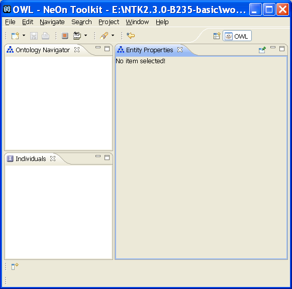

The OWL Editor of NeOn Toolkit is a modeling tool for the creation and maintenance of semantic models (often referred to as "ontologies") written in the Web Ontology Language OWL.
NeOn Toolkit is implemented as a set of Eclipse plugins, which means that it is built on a solid platform with a large user base. The foundation on the Eclipse plugin architecture also means that developers can build additional services on top of NeOn Toolkit.
For more information about the NeOn Toolkit, visit the NeOn Toolkit Web site.
You can access the OWL Editor by selecting the OWL icon in the upper right corner of NeOn Toolkit. Alternatively, go to Window >> Open Perspective >> Other and select OWL in the dialog box.
The OWL Editor consists of the following main panels:

For more information on the user interface, see User Interface Overview.